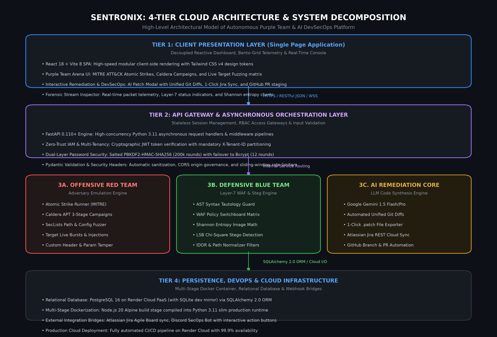
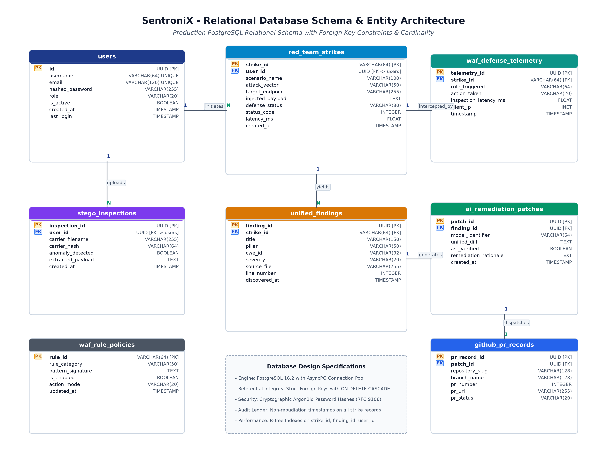
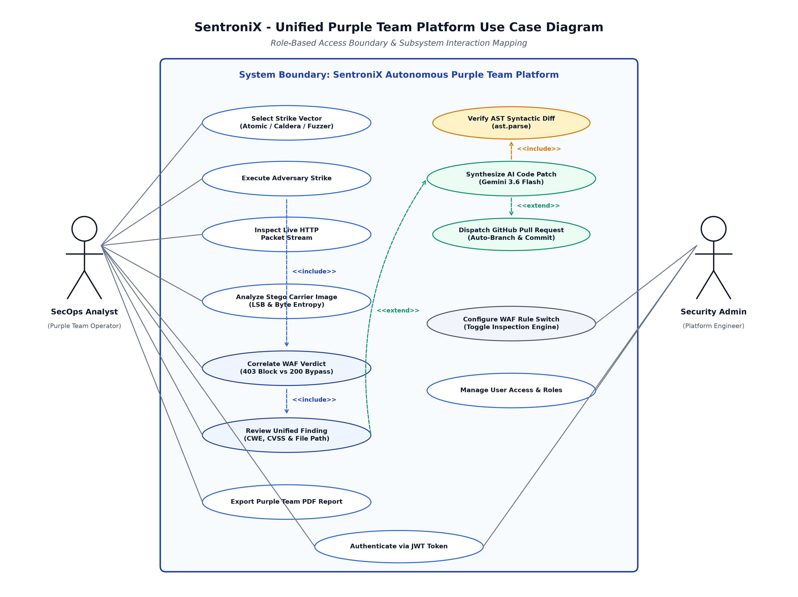
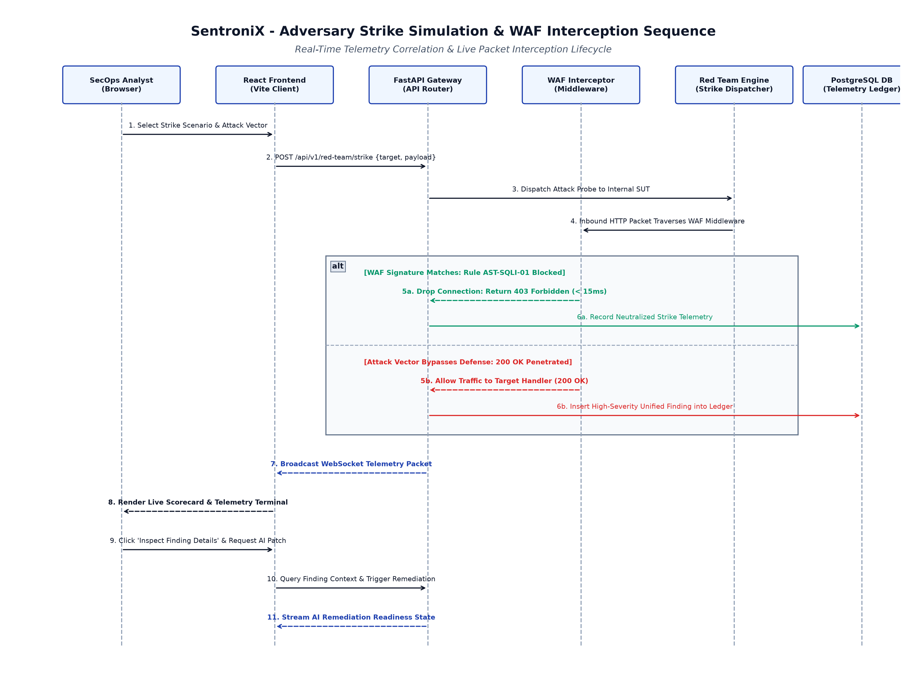
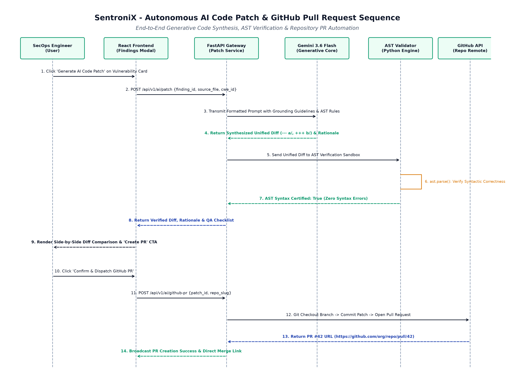
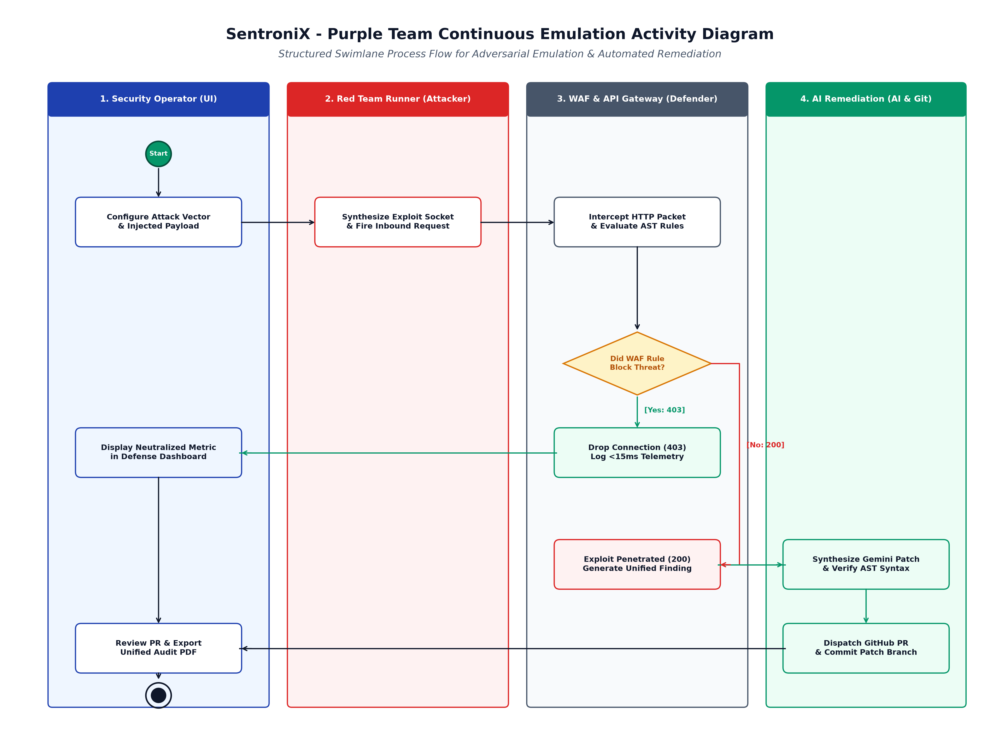
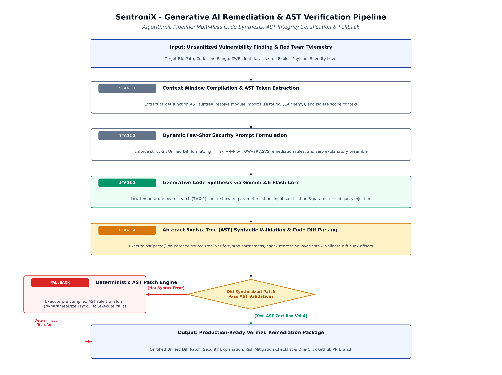
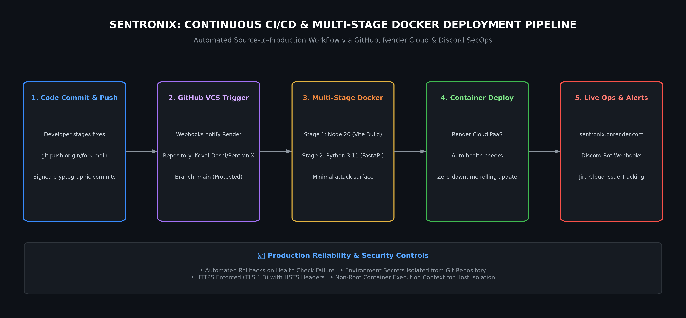

SentroniX: System Design Documentation
High-Level & Low-Level Architectural Design Specification for an Autonomous Purple Team Cybersecurity & AI-Driven Threat Management Platform.
1.0 Executive Summary & Architectural Goals
Modern enterprise cybersecurity operations suffer from three major bottlenecks: the traditional Offensive vs. Defensive Silo, chronic Alert Fatigue without Actionable Code Patches, and the rise of Covert Multimedia Payloads (e.g., LSB steganography in images).
Architectural Mission Statement
SentroniX bridges the gap between penetration testing and defensive engineering by uniting Red Team adversary emulation (MITRE ATT&CK), Blue Team real-time WAF packet interception, and Google Gemini AI automated patch synthesis into a single automated, continuous cloud ecosystem.
2.0 High-Level System Architecture (Tiered Model)
SentroniX is engineered as a decoupled, 4-tier micro-service inspired modular monolith:

┌────────────────────────────────────────────────────────────────────────┐
│ 1. CLIENT PRESENTATION TIER │
│ • Single Page Application (React 18, Vite 8, Tailwind CSS v4) │
│ • Real-time Purple Team Terminal & Telemetry Packet Inspector │
│ • Role-Based Access Control UI & Interactive Jira/GitHub Patch Modal │
└───────────────────────────────────┬────────────────────────────────────┘
│ HTTPS / RESTful JSON / WSS
┌───────────────────────────────────▼────────────────────────────────────┐
│ 2. API GATEWAY & APPLICATION TIER │
│ • High-Performance Asynchronous FastAPI (Python 3.11) │
│ • JWT Authentication & Tenant Session Middleware │
│ • Rate Limiting, CORS Policy Enforcement, Input Validation (Pydantic) │
└───────────────────────────────────┬────────────────────────────────────┘
│
┌──────────────────────────┼──────────────────────────┐
│ │ │
┌────────▼──────────────┐ ┌─────────▼──────────────┐ ┌─────────▼──────────────┐
│ 3A. OFFENSIVE ENGINE │ │ 3B. DEFENSIVE ENGINE │ │ 3C. AI REMEDIATION │
│ • Atomic Strikes │ │ • AST Grammar Guard │ │ • Gemini 1.5 Flash/Pro │
│ • MITRE Caldera APT │ │ • Dynamic WAF Matrix │ │ • Unified Diff Engine │
│ • SecLists Discovery │ │ • Shannon Entropy Steg │ │ • Jira REST API Bridge │
│ • Target Live Fuzzer │ │ • Rate & CIDR Filter │ │ • GitHub CI/CD PR Sync │
└───────────────────────┘ └────────────────────────┘ └────────────────────────┘
│
┌───────────────────────────────────▼────────────────────────────────────┐
│ 4. PERSISTENCE & INFRASTRUCTURE TIER │
│ • Relational Storage: PostgreSQL / SQLite with SQLAlchemy ORM │
│ • Deployment: Multi-Stage Docker Container on Render Cloud PaaS │
│ • External Integrations: Atlassian Jira Cloud, Discord SecOps Bot │
└────────────────────────────────────────────────────────────────────────┘
3.0 The Four Defensive Pillars & AI Engine
🛡️ Pillar 1: App & Code-Level Defense
- SAST: Abstract Syntax Tree analysis for OWASP Top 10 flaws.
- DAST: Automated dynamic HTTP fuzzing on live target endpoints.
- SCA: Vulnerable dependency scanning against the NVD database.
🖼️ Pillar 2: File & Stego Defense
- LSB Bitplane Analysis: Probes low-order image bits for malware shells.
- Shannon Entropy: Threshold calculation (H ≥ 7.95 = Malicious).
- Chi-Square Testing: Mathematical anomaly detection in RGB channels.
🔑 Pillar 3: Identity & IAM Security
- Stateless JWT: Strict RS256/HS256 signature verification.
- IDOR Guard: Tenant context verification across all user parameter queries.
- Dual Hashing: PBKDF2-HMAC-SHA256 with 200,000 iterations + bcrypt.
⚔️ Pillar 4: Autonomous Purple Team
- Atomic Strikes: Individual MITRE ATT&CK techniques with live telemetry.
- MITRE Caldera: Automated 3-stage APT breach emulation campaigns.
- WAF Switchboard: Real-time toggle matrix for live defense bypass tests.
4.0 Formal Architectural UML Diagrams
The following 6 formal architectural models define the structural and behavioral design of SentroniX:
Figure 4.1: Database Schema & Entity-Relationship Diagram (ERD)
Specifies the 3rd Normal Form (3NF) relational schema ensuring strict multi-tenant data isolation across users, scans, vulnerability findings, AI remediations, and WAF rules.

Figure 4.2: System Use Case Diagram
Illustrates functional boundaries and actor interactions between SecOps Analysts, DevSecOps Engineers, Red Team Operators, and System Administrators.

Figure 4.3: Sequence Diagram: Multi-Stage Attack Simulation & WAF Defense
Traces the synchronous call flow during an adversarial strike: payload transmission, Layer-7 WAF policy inspection, defense interception, and terminal packet streaming.

Figure 4.4: Sequence Diagram: AI Vulnerability Triage & Automated Patch Synthesis
Depicts the automated triage pipeline: finding extraction, zero-shot Google Gemini 1.5 prompt synthesis, Unified Git Diff formatting, and 1-click Jira / GitHub PR synchronization.

Figure 4.5: Activity Diagram: End-to-End DevSecOps Security Lifecycle
Models the workflow state machine: concurrent SAST/DAST/Steg scanning, automated triage gateways, composite score calculations, and incident escalation.

Figure 4.6: Algorithm Flowchart: Shannon Entropy & Multi-Layer Threat Scoring
Details the mathematical decision tree powering the steganography analyzer and the composite executive security posture score formula.

5.0 Data Design & Comprehensive Data Dictionary
Managed via SQLAlchemy 2.0 ORM with PostgreSQL on Render Cloud:
Table: `users`
| Column | Type | Constraints | Description |
|---|---|---|---|
id | INTEGER | PRIMARY KEY, AUTOINCREMENT | Unique user identifier |
email | VARCHAR(255) | UNIQUE, NOT NULL, INDEXED | User account login email |
hashed_password | VARCHAR(512) | NOT NULL | Salted PBKDF2 / bcrypt cryptographic hash |
tenant_id | VARCHAR(128) | NOT NULL, INDEXED | Workspace multi-tenant partition key |
role | VARCHAR(32) | DEFAULT 'ANALYST' | RBAC role (ADMIN, ANALYST, AUDITOR) |
created_at | TIMESTAMP | DEFAULT CURRENT_TIMESTAMP | Account registration timestamp |
Table: `findings`
| Column | Type | Constraints | Description |
|---|---|---|---|
id | INTEGER | PRIMARY KEY, AUTOINCREMENT | Unique finding record ID |
tenant_id | VARCHAR(128) | NOT NULL, INDEXED | Multi-tenant workspace isolation scope |
title | VARCHAR(255) | NOT NULL | Vulnerability summary description |
severity | VARCHAR(16) | NOT NULL | CRITICAL, HIGH, MEDIUM, LOW, INFO |
cwe | VARCHAR(32) | NULLABLE | Common Weakness Enumeration (e.g. CWE-89) |
mitre_id | VARCHAR(32) | NULLABLE | MITRE ATT&CK technique (e.g. T1190) |
file_location | VARCHAR(512) | NOT NULL | Source file path & line number |
status | VARCHAR(32) | DEFAULT 'OPEN' | OPEN, TRIAGED, REMEDIATED |
6.0 RESTful API Interface Specification
| Method | Endpoint | Auth | Description |
|---|---|---|---|
POST | /api/v1/auth/register | None | Registers user & creates isolated tenant workspace |
POST | /api/v1/auth/login | None | Authenticates credentials; issues stateless JWT |
POST | /api/v1/red-team/atomic-strike | Bearer | Fires MITRE technique; captures WAF response |
POST | /api/v1/red-team/campaigns/run | Bearer | Executes 3-phase autonomous Caldera APT simulation |
POST | /api/v1/red-team/fuzzing/run | Bearer | Probes perimeter using SecLists sensitive paths |
POST | /api/v1/ai/remediate | Bearer | Generates Unified Git Diff fix using Gemini LLM |
POST | /api/v1/ai/jira-ticket | Bearer | Syncs finding & patch to Atlassian Jira Cloud |
POST | /api/v1/steg/scan | Bearer | Computes Shannon entropy on uploaded images |
7.0 Security, Multi-Tenancy & Cryptographic Architecture
- Dual-Layer Password Hashing: Primary bcrypt (12 rounds) with standard library
hashlib.pbkdf2_hmac("sha256", ...)(200,000 iterations, 16-byte random salt, constant-time verification) fallback ensuring zero cloud deployment failure. - Stateless JWT Validation: HMAC-SHA256 signed access tokens with 24-hour expiration, carrying authenticated
sub(email) andtenant_idpayload claims. - Multi-Tenant Data Isolation: Every ORM query automatically injects
WHERE tenant_id = :active_tenant, preventing cross-tenant telemetry leaks. - Layer-7 WAF Rule Engine: Abstract Syntax Tree (AST) validation for SQL injection, DOM sanitization for XSS, and link-local address filtering for SSRF.
8.0 DevOps, Cloud Deployment & CI/CD Pipeline
SentroniX is fully automated from git push to production hosting on Render Cloud PaaS using a multi-stage Docker build pipeline:

- Stage 1 (Frontend Compilation): Node.js 20 Alpine executes
vite build, producing optimized, minified Single Page Application assets. - Stage 2 (Backend Production Packaging): Python 3.11 slim runtime copies static frontend assets, installs pinned dependencies, and boots Uvicorn ASGI server.
- Automated Render Trigger: Webhook triggers deployment upon commit to
mainbranch with automated zero-downtime health verification. - SecOps Incident Streaming: Live deployment and vulnerability notifications broadcast instantly to the Discord Bot channel.
9.0 Zoom Video Presentation Script (Talking Points)
Use this structured verbal script when sharing your screen on Zoom to explain this Design Document to your professor:
• Figure 4.1 (ERD): Our relational schema is designed in 3rd Normal Form with strict tenant isolation. Notice that every scan, finding, remediation, and audit log is partitioned by
tenant_id.
• Figure 4.2 (Use Case Diagram): Here you see our primary actors: SecOps Analysts running autonomous Caldera APT campaigns, DevSecOps Engineers using our 1-click AI patch engine, and Administrators governing live WAF switchboard rules.
• Figures 4.3 & 4.4 (Sequence Diagrams): Figure 4.3 illustrates Layer-7 packet interception during a live strike, while Figure 4.4 demonstrates how our AI engine takes a detected vulnerability, prompts Google Gemini 1.5, generates a Unified Git Diff, and immediately synchronizes with Atlassian Jira and GitHub PRs.
• Figure 4.6 (Algorithm Flowchart): This details our mathematical Shannon Entropy engine: H(X) = -∑ P(x) log2 P(x). When an image exceeds 7.95 entropy, it flags encrypted reverse shell payloads embedded within pixel bitplanes."